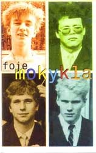

 |
mokykla |
Mokykla yra 1997 m. išleistas ankstyvųjų, 1984-1985 m. buitine aparatūra padarytų grupės Foje įrašų rinkinys. Jis pasirodė tik MC formatu prieš pat paskutiniuosius grupės koncertus.
Albume boso gitara groja 1985 m. grupę palikęs jos ankstyvasis narys Darius Tarasevičius, o dainuoja ne tik Andrius Mamontovas, bet ir kiti grupės nariai.
Profesionaliai Foje vėliau įrašė tik keturias šiame albume esančias dainas – „Liūdesys“, „O, mano saule“, „Muzika“, „Kibernetiniai žaislai“ (visi įrašai įtraukti į rinkinį Kitoks pasaulis.
Daina „Aš bėgu gaudyti drugelių“ buvo atlikta įrašant albumą Tikras garsas.
- Andrius Mamontovas – balsas, gitara, choras
- Darius Tarasevičius – bosas, balsas („Dygsta barzda“, „Aštuoniolikta“), choras
- Arnoldas Lukošius – klavišiniai, balsas („Lukošiaus daina“), choras
- Algis Kriščiūnas – mušamieji, balsas („Gaudžia gitaros“), choras
- Raimondas Trilikauskis – įrašų restauravimas (1997, M-1 įrašų studija)
GAUDŽIA GITAROS
La la la la la la
Gaudžia gitaros
Solinės ir bosinės
O taip pat ir ritminės gitaros
Šokame visi, visi kartu
La la la la la la
La la la la la la la
(tuo tarpu ir užteks)
DYGSTA BARZDA
dygsta barzda dygsta barzda
jaunam berniukui dygsta barzda
labai niuri barzda ryža
ryža labai labai ryža
dygsta barzda bjauri ir niūri
jaunam berniukui dygsta barzda
dygsta barzda dygsta barzda
dygsta visiems
dygsta jauniems ir seniems
visiems
ir man dygsta
dygsta barzda
PRIE JŪROS
sėdėkim prie jūros kartu
lai kojas paglosto banga
sėdėkim abu aš ir tu
lai paliečia ranką ranka
sėdėkim ošime bangų
pas mus jūros vėjas atskris
pajusime jėgą abu
bučiuodami saulės akis
bet jūra čiurlena liūdnai
ji verkia net daros graudu
dangus nusidažė pilkai
todėl kad čia vienas esu
JUODAS VYRUKAS
norėčiau aš labai
ar labai norėtum?
papasakoti jums
ką norėtum papasakoti?
istoriją nelinksmą
apie vaikiną
juodas vyrukas su baltais plaukais
juodas vyrukas
buvo labai labai linksmas
ir turėjo raudoną
o balta mergaitę
su juodais plaukais
balta balta balta balta mergaitė
su juoda
plaukais
su juoda
plaukais
su juoda
man buvo labai gera
ar labai gera?
matyti tą vaikiną
kokį vaikiną?
su juodais juodais juodais juodais plaukais
ir raudonu
tušinuku
ir ne tik
mikrofonu
ir ne tik
raudonu pirštu raudonu pirštu
kol vieną kartą
koki kartą?
trečią
o gal ketvirtą?
ne trečią
ne ketvirtą
važiavau aš mašina
raudona
o gal ir geltona
ne raudona
bet turbūt geltona
ant kelio stovėjo žydas
jis tranzavo
aš jam kaip pi*au per ragus
su ratais
taip
kuriuos turejau prisitvirtines prie batų
tai buvo rolikai-kai-kai-kai
kai jis nugriuvo
kai jis nugriuvo
mes jį įkėlėm ir pasodinom
ant užpakalinės sėdynės
ant galvos
PILKAS NAMAS
išeinam į kelią
dulkėtą ir sunkų
galbūt mes dar skubam
tą kelią pažint
paliekame namą
nors pilką bet mielą
lydės pro jo langus
mus žvigsniai vaikų
ilgai aš atminsiu
tą pilkąjį namą
jis bus manyje
iki pat pabaigus
pro jo tamsius langus
kadaise žiūrėjau
į tuos kur išėjo
anksčiau už mane
aš tai atsiminsiu
kas širdį paguodžia
o tai kas negero
išskris su sapnais
tikiu kad kiekvienas
žmogus turi namą
kuris davė pradžią
jo žingsniui pirmam
jis teikia stiprybės
kai lenkiasi keliai
ir stabdo tada
kai skubi pernelyg
širdy savo vietą
surask jam garbingą
tikėk juo ir saugok
lyg patį save
žinoki pamesi
sustos tavo laikas
nurims tavo žingsniai
ir dūžiai širdies
aš tai atsiminsiu
kas širdį paguodžia
o tai kas negera
išskris su sapnais
kai mes su draugais
ėjom saulės pasveikint
džiaugsmingai šypsojais
tu mums įkandin
aš garbinau saulę
ir pilkąjį namą
kurie leido mums
lyg per nauja užgimt
o name pilkasis
mane tu globojai
ir saugojai mažą
nuo vėtrų piktų
ir aš negaliu
nesakyti tau ačiū
nes čia aš išmokau
tikėt savimi
LUKOŠIAUS DAINA
širdį mano nutvilkdė aistra
pamilau aš be saiko vyruką
to negalėtum atleist
man mielas, Petrai
prašau tavęs - mylėk mane
taip kaip anksčiau
prašau tavęs,
mano drauge žydrūne
ištrink šitą juostą
su mūsų aistros šnekom
negalėčiau daugiau
tau priminti valandų tų
kai mylėjomės apsikabinę
po pušies lanku
negalėčiau daugiau parodyt
kaip sukasi galva
nuo tos meilės...po stogu
širdis mana priklauso ne tau
širdis mana priklauso jau ne tau
tačiau maniau, maniau, maniau
kad neužmirši mūsų meilės vakarų
Petrai, mano mielas drauge žydrūne
Petrai, mano mielas drauge žydrūne
žydrūne, žydrūne, žydrūne
mano mielas draugas vardu Žydrūnas
žydrūnas, žydrūnas....
mano mielas draugas vardu žydrūnas
žydrūnas, žydrūnas...
AUKŠTAS VYRAS
tai atsitiko šį rugsėjo mėnesį
ėjau per miestą buvo linksma man
ėjau tiktai staiga patraukė dėmesį
keista scena aikštelėj prie fontano
ten aukštas vyras mušė liesą moterį
aš paslapčia ilgai stebėjau juos
galvojau skirti bet nušvito protas
o ką jei vyras tas ir man suduos
dėl ko jis mušė ją ar aš žinau
juk gali būti kad yra už ką
o gal sušilti nori pagalvojau
mat buvo rudenio diena šalta
ilgai tada stebėjau tokius žmones
ir tapo nepasakomai skaudu
kad vyksta tokios scenos nemalonios
rugsėjo lapams krintant pamažu
DUJOS
kai tave mylimoji paliko
jei sudirginti tavo jausmai
atsisėsk prie dujinės viryklės
ir į liepsną žiurėki ilgai
nesvarbu ant kėdės ar grindų
tik sėdėki ramiai ir tada
nuramins tavo siela gamta
liepsna iš gamtinių dujų
a-a-a nes liepsna
juk iš gamtinių dujų
nes liepsna
juk iš gamtinių dujų
iš dujų dujų dujų dujų
do you do you do you
do you love me now
do you do you love me now
LIŪDESYS
žodžių daug įvairių išgalvojame mes
kad netektų mastyt ir liūdėt
visi norime būt maloniais ir džiugiais
nekaltais ir linksmais būtinai
tik kam visa tai
tu liūdėt nebijok
tu liūdėt nebijok
nebijok liūdėt
nes tiktai liūdesy
nes tiktai liūdesy
sielos džiaugsmas
iš tų žodžių skambių
ir juokingai kvailų
mes sustatome daug sakinių
galim juoktis ilgai
nekaltai ir linksmai
kol pasibaigia tie sakiniai
tik kam visa tai
argi gali įvertinti šviesą tasai
kas nematė tikrosios tamsos
nenuvertinkim liūdesio nes tik jisai
mums parodo kas tai džiaugsmai
AŠ BĖGU GAUDYTI DRUGELIŲ
Aš bėgu gaudyti drugelių
O MANO SAULE
tu ateini debesų kilimais
tu gyveni ten kur paukščių takai
tu negali nesijuokt su vaikais
kur tu eini žydi gėlės laukais
o mano saule tu mano šviesa
tu žemę sušildai ir sklaidos tamsa
tada kai nuskaidrins
padangę aušra
o mano saule
ateik su diena
būk visada mėlynam danguje
man neramu kai tavęs ten nėra
MUZIKA
vieną gražų ankstyvą rytą pabudau
ir ilgai žiūrėjau į sieną
kal pro miglą pamačiau
laikrodį kabantį ten
jis kažkaip keistai tiksėjo
ne į ritmą vis tiksėjo
kas gi jam atsitiko
išėjau ieškoti atsakymo
o tiktai muzika
stabdo laiką keičia žodį
o tiktai muzika
tiktai muzika viena
užlipau ant aukšto stataus stogo
ten buvo daug daug daug kaminų ir antenų
aš vaikščiojau tarp jų kaip miške
tamsiam miške
bet atsakymo ten nebuvo
vienas geras barzdotas dėdė man pasakė berniuk
aš žinau kodėl stovi laikrodis
viskas labai paprasta
tu per stipriai prisukai spyruoklę
ir rodyklės naktį išskrido pro langą
AŠTUONIOLIKTA
antakalnis, pačiam jo vidury
stovi mokykla gaili
antakalnis, pačiam jo vidury
stovi mokykla žavi
antakalnis, pačiam jo vidury
stovi mokykla puiki
aštuoniolikta! aštuoniolikta!
tik nereikia
neužmirškim
kur buvom seniai
ši tokie labai geri
švelnūs vaikai
ir išmesim
pasiliksim
čia mes visada
aštuoniolikta! aštuoniolikta!
ne nereikia, negailėkim
mes tų kvailių
kur išėjo, kur paliko
mokyklą mūsų
sugrišk sugrįšk
tu šansų dar turi
sugrįšk į gimtą mokyklą
į aštuonioliktą!
aštuoniolikta! aštuoniolikta!
KIBERNETINIAI ŽAISLAI
mes žinom medžiagas formas daiktų
mes žinom kas yra gera ir bloga
mes žinom kaip metai keičia metus
ir kaip nuo žaibo apsaugoti stogą
tiktai nežinome
kas tai lietus
kas tai žvaigždės
gėlės dangus
nes nuo vaikystės mums bruko žaislus
kibernetinius ir negyvus
metalinius šaltus ir kietus
(nemielus)
mes galim kelią nutiest į žvaigždes
mes galim kalnus patraukti į šoną
mes galim greit sustabdyti upes
ir padaryti iš juodo geltoną
mes nusikėlėm per laiką pirmyn
mėnulio pievas užsėjom aguonom
mes darom pieną iš jūros vandens
ir iš medienos padarome duoną